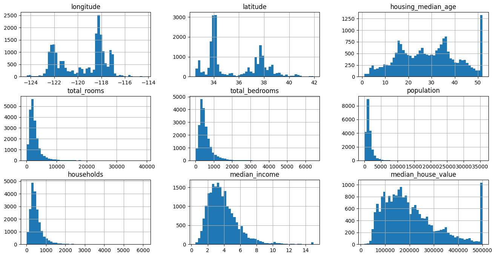

In this section, you will work through an example project end to end, pretending to be a recently hired data scientist at a real estate company. The goal of this example is to illustrate the main steps of a machine learning project, not to learn everything about the real estate business. Here are the main steps we will go through:
Look at the big picture: What is the business problem we are trying to solve? How can we measure success? What is the current solution?
Get the data: Where does the data come from? How can we get it?
Explore and visualize the data to gain insights: What is in the data? What are the main characteristics of the data? What are the relationships between different attributes?
Prepare the data for machine learning algorithms: How can we clean the data? How can we transform the data into a format that is suitable for machine learning algorithms?
Select and train a model: What are the different types of machine learning algorithms? How can we select the best algorithm for our problem? How can we train the model?
Fine-tune the model: How can we improve the model’s performance? How can we select the best hyperparameters?
Present the solution: How can we communicate the results to stakeholders? How can we present the solution in a way that is easy to understand?
Launch, monitor, and maintain the system: How can we deploy the model in a production environment? How can we monitor the model’s performance over time? How can we update the model as new data becomes available?
1.3.1 Working with Real Data
When learning about machine learning, it is best to experiment with real-world data, not artificial datasets. Fortunately, there are thousands of open datasets to choose from, ranging across all sorts of domains. Here are a few places you can look to get data:
In this example, we will use the California housing dataset, which contains information about various districts in California, including features such as median income, average house age, and average number of rooms. This dataset is available in the StatLib repository and is also included in the Scikit-learn library.
California housing prices
1.3.2 Look at the Big Picture
Our first task is to use California census data to build a model of housing prices in the state. This model should learn from this data and be able to predict the median housing price in any district, given all the other metrics.
The first question to ask is what exactly the business objective is. Building a model is probably not the end goal. How does the company expect to use and benefit from this model? Knowing the objective is important because it will determine how you frame the problem, which algorithms you will select, which performance measure you will use to evaluate your model, and how much effort you will spend tweaking it.
1.3.2.1 Pipelines
A sequence of data processing components is called a data pipeline. Pipelines are very common in machine learning systems, since there is a lot of data to manipulate and many data transformations to apply.
Components typically run asynchronously. Each component pulls in a large amount of data, processes it, and spits out the result in another data store. Then, some time later, the next component in the pipeline pulls in this data and spits out its own output. Each component is fairly self-contained: the interface between components is simply the data store. This makes the system simple to grasp (with the help of a data flow graph), and different teams can focus on different components. Moreover, if a component breaks down, the downstream components can often continue to run normally (at least for a while) by just using the last output from the broken component. This makes the architecture quite robust.
On the other hand, a broken component can go unnoticed for some time if proper monitoring is not implemented. The data gets stale and the overall system’s performance drops.
Machine learning real estate pipeline
1.3.2.2 Frame the Problem
First, determine what kind of training supervision the model will need: is it a supervised, unsupervised, semi-supervised, self-supervised, or reinforcement learning task? And is it a classification task, a regression task, or something else? Should you use batch learning or online learning techniques? Before you read on, pause and try to answer these questions for yourself.
This is clearly a typical supervised learning task, since the model can be trained with labeled examples (each instance comes with the expected output, i.e., the district’s median housing price). It is a typical regression task, since the model will be asked to predict a value. More specifically, this is a multiple regression problem, since the system will use multiple features to make a prediction (the district’s population, the median income, etc.). It is also a univariate regression problem, since we are only trying to predict a single value for each district. If we were trying to predict multiple values per district, it would be a multivariate regression problem. Finally, there is no continuous flow of data coming into the system, there is no particular need to adjust changing data rapidly, and data is small enough to fit in memory, so plain batch learning should do just fine.
1.3.2.3 Select a Performance Measure
A typical performance measure for regression problems is the Root Mean Square Error (RMSE). It gives an idea of how much error the system typically makes in its predictions, with a higher weight given to large errors.
\(\textbf{x}^{(i)}\) is a vector of all the feature values of the \(i^{th}\) instance in the dataset \(\textbf{X}\), and \(y^{(i)}\) is the corresponding target value or label (the median housing price in this case).
\(\textbf{X}\) is a matrix containing all the feature values (excluding labels) of all instances in the dataset. There is one row per instance, and the \(i^{th}\) row contains is equal to the transpose of the feature vector \(\textbf{x}^{(i)}\).
\(m\) is the number of instances in the dataset \(\textbf{X}\)
\(h\) is your system’s prediction function, also called hypothesis. When a system is given instance’s feature vector \(\textbf{x}^{(i)}\), it outputs a predicted value \(\hat{y}^{(i)} = h(\textbf{x}^{(i)})\) for that instance.
Although the RMSE is generally the preferred performance measure for regression tasks, in some contexts you may prefer to use another function. For example, if there are many outliers in the data, you may want to use the Mean Absolute Error (MAE) instead, since it is less sensitive to outliers.
In typical environments your data would be available in a relational database or some other common data store, and spread across multiple tables/documents/files. To access it, you would first need to get your credentials and access authorizations and familiarize yourself with the data schema. In this project, however, things are much simpler: We are going to download a single compressed file, housing.tgz, which contains a comma-separated values (CSV) file called housing.csv with all the data
Code
from pathlib import Pathimport pandas as pdimport tarfileimport urllib.requestdef load_housing_data(): tarball_path = Path("datasets/housing.tgz")ifnot tarball_path.is_file(): Path("datasets").mkdir(parents=True, exist_ok=True) url ="https://github.com/ageron/data/raw/main/housing.tgz" urllib.request.urlretrieve(url, tarball_path)with tarfile.open(tarball_path) as housing_tarball: housing_tarball.extractall(path="datasets", filter='data')return pd.read_csv(Path("datasets/housing/housing.csv"))
1.3.3.1 Take a Quick Look at the Data Structure
Code
housing = load_housing_data()housing.head()
longitude
latitude
housing_median_age
total_rooms
total_bedrooms
population
households
median_income
median_house_value
ocean_proximity
0
-122.23
37.88
41.0
880.0
129.0
322.0
126.0
8.3252
452600.0
NEAR BAY
1
-122.22
37.86
21.0
7099.0
1106.0
2401.0
1138.0
8.3014
358500.0
NEAR BAY
2
-122.24
37.85
52.0
1467.0
190.0
496.0
177.0
7.2574
352100.0
NEAR BAY
3
-122.25
37.85
52.0
1274.0
235.0
558.0
219.0
5.6431
341300.0
NEAR BAY
4
-122.25
37.85
52.0
1627.0
280.0
565.0
259.0
3.8462
342200.0
NEAR BAY
The info() method is useful to get a quick description of the data, in particular the total number of rows, each attribute’s type, and the number of non-null val
ocean_proximity
<1H OCEAN 9136
INLAND 6551
NEAR OCEAN 2658
NEAR BAY 2290
ISLAND 5
Name: count, dtype: int64
Code
housing.describe()
longitude
latitude
housing_median_age
total_rooms
total_bedrooms
population
households
median_income
median_house_value
count
20640.000000
20640.000000
20640.000000
20640.000000
20433.000000
20640.000000
20640.000000
20640.000000
20640.000000
mean
-119.569704
35.631861
28.639486
2635.763081
537.870553
1425.476744
499.539680
3.870671
206855.816909
std
2.003532
2.135952
12.585558
2181.615252
421.385070
1132.462122
382.329753
1.899822
115395.615874
min
-124.350000
32.540000
1.000000
2.000000
1.000000
3.000000
1.000000
0.499900
14999.000000
25%
-121.800000
33.930000
18.000000
1447.750000
296.000000
787.000000
280.000000
2.563400
119600.000000
50%
-118.490000
34.260000
29.000000
2127.000000
435.000000
1166.000000
409.000000
3.534800
179700.000000
75%
-118.010000
37.710000
37.000000
3148.000000
647.000000
1725.000000
605.000000
4.743250
264725.000000
max
-114.310000
41.950000
52.000000
39320.000000
6445.000000
35682.000000
6082.000000
15.000100
500001.000000
The count, mean, min, and max rows are self-explanatory. Note that the null values are ignored (so, for example, the count of total_bedrooms is 20,433, not 20,640). The std row shows the standard deviation, which measures how dispersed the values are. The 25%, 50%, and 75% rows show the corresponding percentiles: a percentile indicates the value below which a given percentage of observations in a group of observations fall. For example, 25% of the districts have a housing_median_age lower than 18, while 50% are lower than 29 and 75% are lower than 37. These are often called the 25th percentile (or first quartile), the median, and the 75th percentile (or third quartile).
Another quick way to get a feel of the type of data you are dealing with is to plot a histogram for each numerical attribute. A histogram shows the number of instances (on the vertical axis) that have given a value range (on the horizontal axis). You can either plot this one attribute at a time, or you can call the hist() method on the entire DataFrame to plot a histogram for each numerical attribute. Here is the result:
Code
import matplotlib.pyplot as plthousing.hist(bins=50, figsize=(16, 8))plt.show()

Looking at these histograms, you notice a few things:
First, the median income attribute does not look like it is expressed in US dollars (USD). After checking with the team that collected the data, you are told that the data has been scaled and capped at 15 (actually, 15.0001) for higher median incomes, and at 0.5 (actually, 0.4999) for lower median incomes. The numbers represent roughly tens of thousands of dollars (e.g., 3 actually means about $30,000). Working with preprocessed attributes is common in machine learning, and it is not necessarily a problem, but you should try to understand how the data was computed.
The housing median age and the median house value were also capped. The latter may be a serious problem since it is your target attribute (your labels). Your machine learning algorithms may learn that prices never go beyond that limit. You need to check with your client team (the team that will use your system’s output) to see if this is a problem or not. If they tell you that they need precise predictions even beyond $500,000, then you have two options:
Collect proper labels for the districts whose labels were capped.
Remove those districts from the training set (and also from the test set, since your system should not be evaluated poorly if it predicts values beyond $500,000).
These attributes have very different scales. We will discuss this later in this chapter, when we explore feature scaling.
Finally, many histograms are skewed right: they extend much farther to the right of the median than to the left. This may make it a bit harder for some machine learning algorithms to detect patterns in the data. Later, we’ll try to tranform these attributes to have a more symmetrical and bell-shaped distribution.
1.3.3.2 Create a Test Set
It may seem strange to voluntarily set aside part of the data at this stage. After all, you have only taken a quick glance at the data, and surely you should learn a whole lot more about it before you decide what algorithms to use, right? This is true, but your brain is an amazing pattern detection system, which also means that it is highly prone to overfitting: if you look at the test set, you may stumble upon some seemingly interesting pattern in the test data that leads you to select a particular kind of machine learning model. When you estimate the generalization error using the test set, your estimate will be too optimistic, and you will launch a system that will not perform as well as expected. This is called data snooping bias.
Creating a test set is theoretically simple; pick some instances randomly, typically 20% of the dataset (or less if your dataset is very large), and set them aside.
Scikit-Learn provides a few functions to split datasets into multiple subsets in various ways. The simplest function is train_test_split(). There is a random_state parameter that allows you to set the random generator seed. Second, you can pass it multiple datasets with an identical number of rows, and it will split them on the same indices (this is useful when you have a separate set of labels). Here is how to use it:
Code
from sklearn.model_selection import train_test_splittrain_set, test_set = train_test_split(housing, test_size=0.2, random_state=42)
However, we are considering a purely random sampling method. This is generally fine if your dataset is large enough (especially relative to the number of attributes), but if it is not, you run the risk of introducing a significant sampling bias. When employees at a survey company decides to call 1,000 people to ask them a few questions, they don’t just pick 1,000 people randomly in a phone book. They try to ensure that these 1,000 people are representative of the whole population, with regard to the questions they want to ask. For example, the US population is 51.1% females and 48.9% males, so a well-conducted survey in the US would try to maintain this ratio in the sample: 511 females and 489 males (at least if it seems possible that the answers may vary across genders). This is called stratified sampling: the population is divided into homogeneous subgroups called strata, and the right number of instances are sampled from each stratum to guarantee that the test set is representative of the overall population. If the people running the survey used purely random sampling, there would be about a 10.7% chance of sampling a skewed test set with less than 48.5% female or more than 53.5% female participants. Either way, the survey results would likely be quite biased.
Suppose you’ve chatted with some experts who told you that the median income is a very important attribute to predict median housing prices. You may want to ensure that the test set is representative of the various categories of incomes in the whole dataset. Since the median income is a continuous numerical attribute, you first need to create an income category attribute. Let’s look at the median income histogram more closely (back in Figure 2-8): most median income values are clustered around 1.5 to 6 (i.e., $15,000–$60,000), but some median incomes go far beyond 6. It is important to have a sufficient number of instances in your dataset for each stratum, or else the estimate of a stratum’s importance may be biased. This means that you should not have too many strata, and each stratum should be large enough. The following code uses the pd.cut() function to create an income category attribute with five categories (labeled from 1 to 5); category 1 ranges from 0 to 1.5 (i.e., less than $15,000), category 2 from 1.5 to 3, and so on:
# extra code – computes the data for proportions in the full datasetdef income_cat_proportions(data):return data["income_cat"].value_counts() /len(data)train_set, test_set = train_test_split(housing, test_size=0.2, random_state=42)compare_props = pd.DataFrame({"Overall %": income_cat_proportions(housing),"Stratified %": income_cat_proportions(strat_test_set),"Random %": income_cat_proportions(test_set),}).sort_index()compare_props.index.name ="Income Category"compare_props["Strat. Error %"] = (compare_props["Stratified %"] / compare_props["Overall %"] -1)compare_props["Rand. Error %"] = (compare_props["Random %"] / compare_props["Overall %"] -1)(compare_props *100).round(2)
Overall %
Stratified %
Random %
Strat. Error %
Rand. Error %
Income Category
1
3.98
4.00
4.24
0.36
6.45
2
31.88
31.88
30.74
-0.02
-3.59
3
35.06
35.05
34.52
-0.01
-1.53
4
17.63
17.64
18.41
0.03
4.42
5
11.44
11.43
12.09
-0.08
5.63
Code
# We can now remove the `income_cat` attribute so the data is back to its original state.for set_ in (strat_train_set, strat_test_set): set_.drop("income_cat", axis=1, inplace=True)
1.3.4 Explore and Visualize the Data to Gain Insights
First, make sure you have put the test set aside and you are only exploring the training set. Also, if the training set is very large, you may want to sample an exploration set, to make manipulations easy and fast during the exploration phase. In this case, the training set is quite small, so you can just work directly on the full set. Since we are going to modify the training set a lot during the exploration phase, it is a good idea to make a copy of it so that you can always go back to the original data if necessary:
You can clearly see the high-density areas, namely the Bay Area and around Los Angeles and San Diego, plus a long line of fairly high-density areas in the Central Valley (in particular, around Sacramento and Fresno).
This picture tells you that the housing prices are much related to the location (e.g. close to the ocean) and to the population density (the size of each circle is proportional to the district’s population). The ocean proximity attribute may be useful as well, although in Northern California the prices in coastal districts are not too high, so it’s not a simple rule.
1.3.4.2 Look for Correlations
Correlation examples
Since the dataset is not too large, you can easily compute the standard correlation coefficient (also called Pearson’s r) between every pair of attributes using the corr() method:
Another way to check for correlation between attributes is to use the Pandas scatter_matrix() function, which plots every numerical attribute against every other numerical attribute. We decide to focus on a few promising attributes (including the target attribute, median_house_value):
This plot reveals a few things. First, correlation is indeed quite strong; you can clearly see the upward trend, and the points are not too dispersed. Second, the price cap you noticed earlier is clearly visible as a horizontal line around $500,000. But the plot also reveals other less obvious straight lines: a horizontal line around $450,000,another around $350,000, perhaps aone around $280,000, and a few vertical lines as well. You may want to try removing the corresponding districts to prevent your algorithms from learning these quirks.
1.3.4.3 Experiment with Attribute Combinations
One last thing you may want to do before preparing the data for machine learning algorithms is to try out various attribute combinations. For example, the total number of rooms in a district is not very useful if you don’t know how many households there are. What you really want is the number of rooms per household. Similarly, the total number of bedrooms by itself is not very useful: you probably want to compare it to the number of rooms. And the population per household also seems like an interesting attribute combination to look at. You create these new attributes as follows:
The new bedrooms_ratio attribute is much more correlated with the median house value than the total number of rooms or bedrooms. It’s a strong negative correlation, so it looks like houses with a lower bedroom/room ratio tend to be more expensive. The number of rooms per household is also more informative than the total number of rooms in a district -obviously the larger the houses, the more expensive they are.
This round of exploration does not have to be absolutely thorough; the point is to start off on the right foot and quickly gain insights that will help you get a first reasonably good prototype. But this is an iterative process: once you get a prototype up and running, you can analyze its output to gain more insights and come back to this exploration step.
1.3.5 Prepare the Data for Machine Learning Algorithms
References:
Disclaimer: Some of the material in this notebook is adapted from other sources. These references are provided for further reading and to acknowledge the original authors.
Chapter 2 Hands-On Machine Learning with Scikit-Learn, Keras, and TensorFlow by Aurélien Géron, 3rd edition